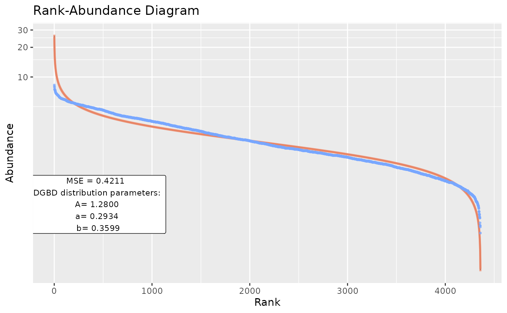
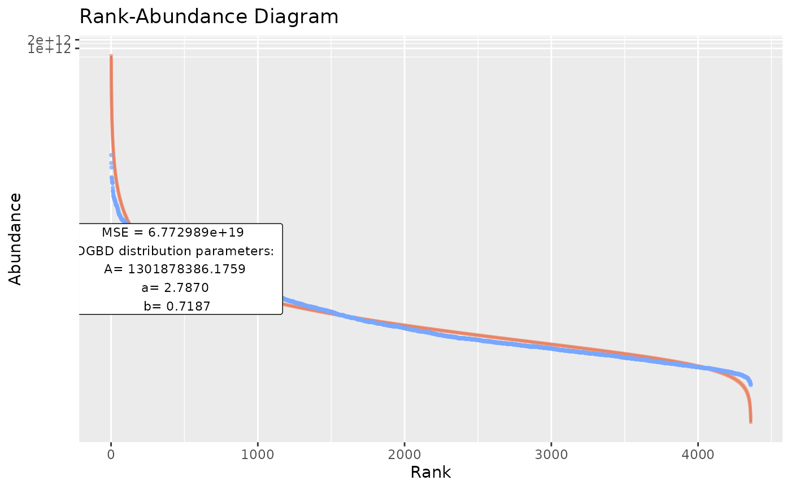
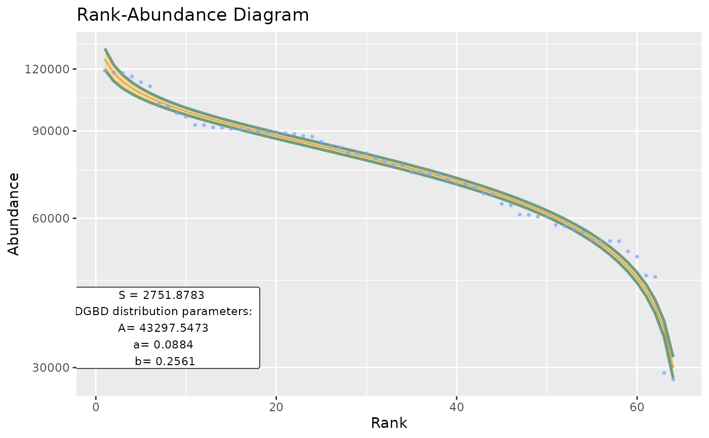
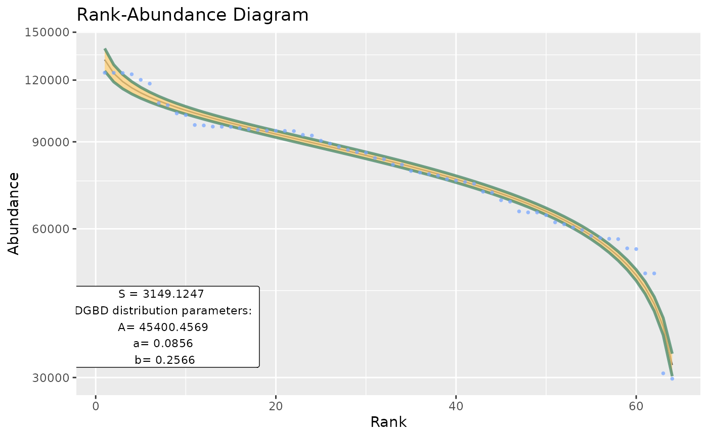
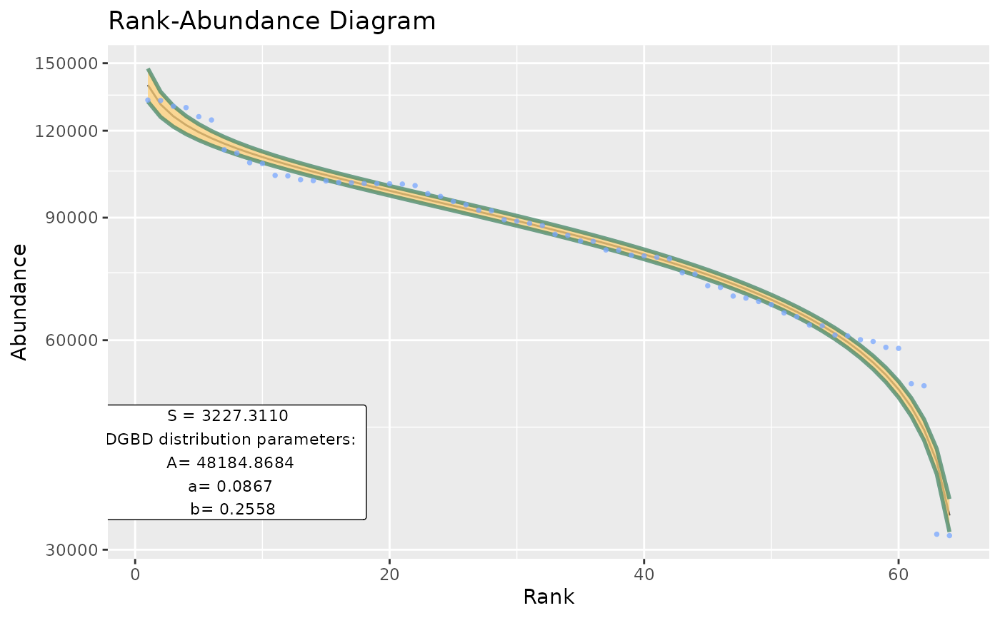
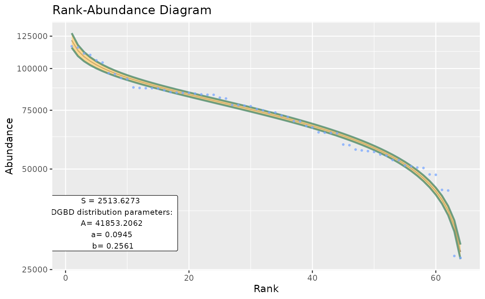
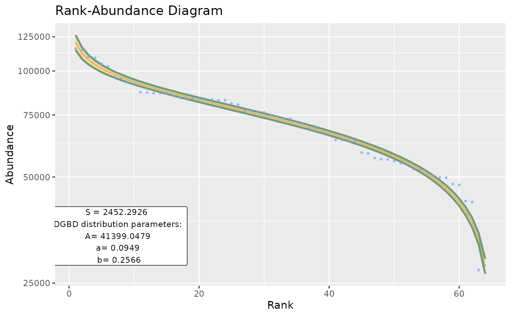

Basic wrapper for BC_plot and BC_report intended to be used for large data frames.
Usage
BC_multiple(
df_abundance,
column = NULL,
is_phyloseq = FALSE,
supress_messages = TRUE,
report_only = FALSE,
file_output_mode = FALSE,
called_from_many = NULL,
...
)Arguments
- df_abundance
A data frame that contains abundance data.
- column
Optional. A vector that contains either column name strings or numeric column indices to be analyzed. By default includes all columns.
- is_phyloseq
Logical, optional. Use if the object to be analysed has the phyloseq class.
- supress_messages
Logical. Allows to skip messages that detail how many samples have been processed. Also stops the resulting data frame from being printed. Defaults to true.
- report_only
Logical. Use to output a data frame without the BC_plot object, intended to reduce the size of the output for large analyses. Defaults to false.
- file_output_mode
Logical. Whether to provide all analysis inside the R environment (when false) or to packet BC_report results into files (when true). Recommended when analyzing very large datasets.
- called_from_many
Automatically handled. An object name passed from BC_many.
- ...
passes arguments to
BC_reportandBC_plot.
Value
A data frame where each row represents a fitted DGBD. The first column stores the BC_plot objects and the second column stores the BC_reports. Each object's output is stored inside of a list.
Examples
BC_multiple(df_abundance=DGBD::MOMv3.3, column = c(7:8))
#> [1] "The data fit the DGB distribution with parameters:"
#> A a b
#> 2.5 % 1.209095 0.2976284 0.3556487
#> 50 % 1.280005 0.2933839 0.3598932
#> 97.5 % 1.355073 0.2891393 0.3641378
#> [1] "And the fit has a MSE of:"
#> [1] 0.4211116

#> [1] "The data fit the DGB distribution with parameters:"
#> A a b
#> 2.5 % 957164933 2.809923 0.6957746
#> 50 % 1301878386 2.787015 0.7186829
#> 97.5 % 1770736968 2.764107 0.7415911
#> [1] "And the fit has a MSE of:"
#> [1] 6.772989e+19

BC_multiple(df_abundance=DGBD::EC_Codon, model_extra="S",confint_col="#448666",show_stats=FALSE)




